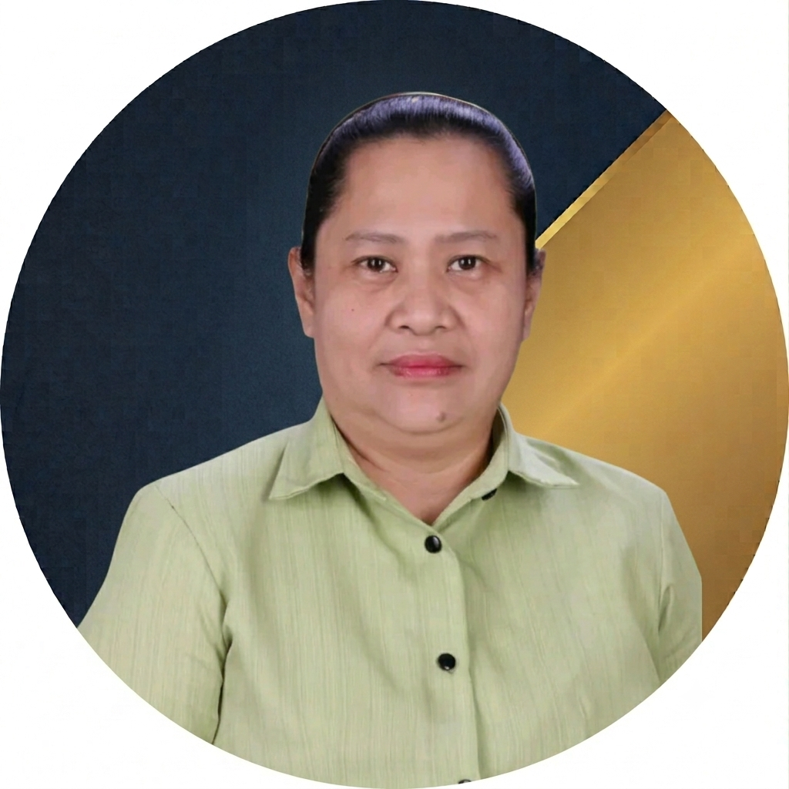
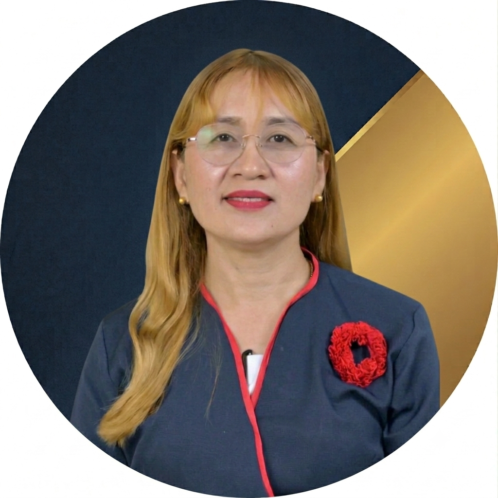
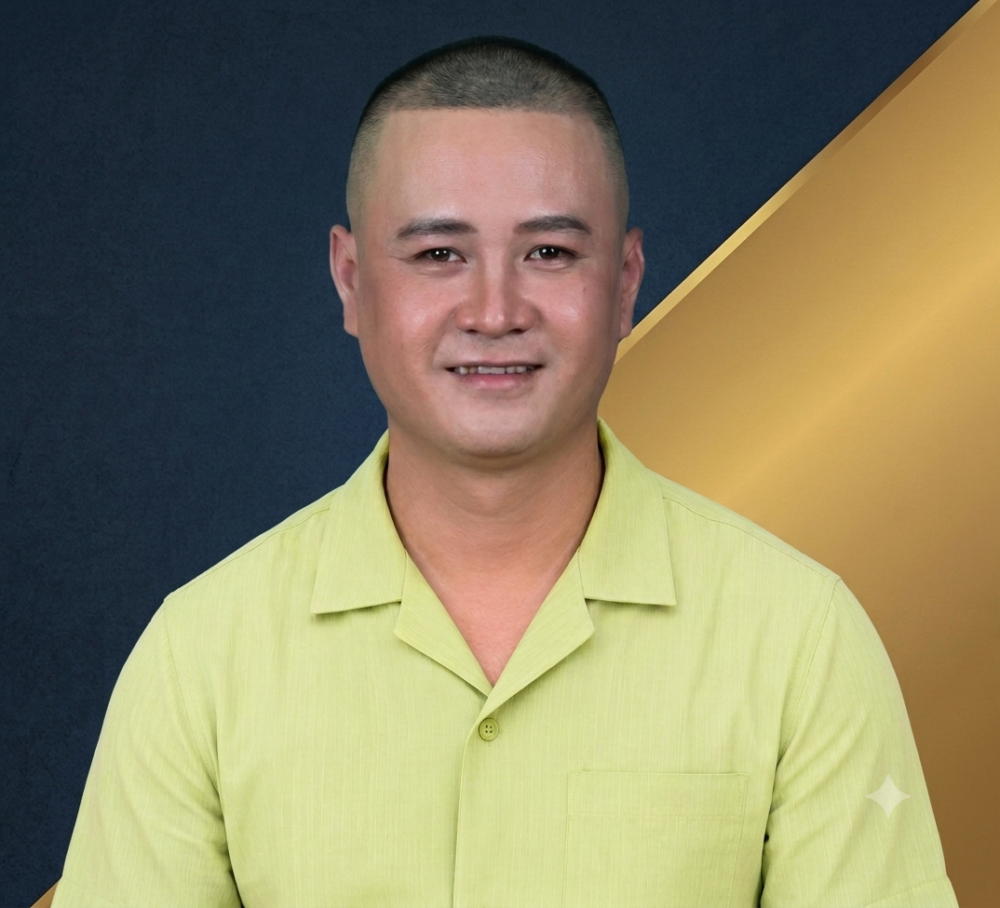

Our Campus Leaders
Get to know the university and campus officials who help guide, manage, and support the academic community of Iloilo State University of Fisheries Science and Technology – San Enrique Campus.
University Level
Dr. Nordy D. Siason Jr., EdD, CESO VI
University President
Dr. Nordy D. Siason Jr. is an acclaimed Filipino educator and the first University President of the Iloilo State University of Fisheries Science and Technology (ISUFST). Holding a Doctor of Education (EdD) degree, he is widely recognized for leading the institution's historic transition from a college to a full state university and has been honored nationally for his transformative leadership in higher education.
Campus Level
Dr. Michael B. Dizon, EdD
Campus Administrator
Dr. Michael B. Dizon is an educational leader who serves as the Campus Administrator of the Iloilo State University of Fisheries Science and Technology (ISUFST) San Enrique Campus. Holding a Doctor of Education (EdD) degree, he manages the operations of the campus and concurrently serves as the university's Director of the Learning Assessment Center.
Mrs. Melby P. Parreño
Administrative Officer VI
Mrs. Melby P. Parreño is a senior administrator who serves as the Administrative Officer VI of the Iloilo State University of Fisheries Science and Technology (ISUFST) San Enrique Campus. In this key role, she directs the campus-level administrative operations, human resources, procurement, and financial support services alongside the campus executive leadership team.
Deans of the Different Colleges

Dr. Wenda D. Panes
Dean, College of Informatics and Computing Innovations (CICI)
Dr. Wenda D. Panes is an information technology expert and educational leader who serves as the Dean of the newly unified College of Informatics and Computing Innovations (CICI) at the Iloilo State University of Fisheries Science and Technology (ISUFST) San Enrique Campus. Holding a Doctor of Education (EdD) degree, she manages the campus computing faculty, curricula, and digital initiatives while serving as a certified regional quality assurance expert for IT education.
Dr. Janice H. Ching
Dean, College of Business, Management, and Sustainable Development (CBMSD)
Dr. Janice H. Ching is a business scholar and educational leader who serves as the OIC Campus Dean of the College of Business, Management and Sustainable Development (CBMSD) at the Iloilo State University of Fisheries Science and Technology (ISUFST) San Enrique Campus. She oversees the academic administration of the campus business, hospitality, and management programs, while spearheading localized research, community extension projects, and international student internships. and Technology
Dr. Noli L. Gerona
Dean, College of Agriculture (COAG)
Dr. Noli L. Gerona is an agricultural scientist and academic administrator serving as the Dean of the College of Agriculture at the ISUFST San Enrique Campus. In his role, he leads the development of agricultural instruction, localized farming innovation, and strategic partnerships—such as recent community outreach collaborations with the Department of Social Welfare and Development (DSWD). He works alongside the campus administration to advance food security, biological farming controls, and student research.
Dr. Rene T. Estomo
Dean, College of Education (COED)
Dr. Rene T. Estomo is an educational specialist and academic leader serving as the Campus Dean of the College of Education at the ISUFST San Enrique Campus. He manages the training, curricula, and professional deployment of pre-service teachers on his campus. Additionally, he works alongside university-wide teams to direct educational seminars focusing on foundational instruction, formative assessment structures, and authentic classroom validations to meet Level III and IV institutional accreditation parameters.
CICI Faculty Members
Faculty Members
College of Informatics and Computing Innovations
Dr. Wenda D. Panes
Dean, College of Informatics and Computing Innovations (CICI)
Dr. Wenda D. Panes is an information technology expert and educational leader who serves as the Dean of the newly unified College of Informatics and Computing Innovations (CICI) at the Iloilo State University of Fisheries Science and Technology (ISUFST) San Enrique Campus. Holding a Doctor of Education (EdD) degree, she manages the campus computing faculty, curricula, and digital initiatives while serving as a certified regional quality assurance expert for IT education.
Dr. Weena J. Bulnes
CICI Faculty Member
Dr. Weena J. Bulnes is an IT scholar and faculty leader at ISUFST San Enrique Campus. Holding a Doctor of Education (EdD) degree, she serves as the Secretary of the campus Teachers and Employees Association and works as a member of the Bids and Awards Committee. Her research focuses on digital systems and educational management.
Dr. Dythne P. Dacudao
CICI Faculty Member
Dr. Dythne P. Dacudao is an information technology expert and academic administrator serving as a senior faculty member at the Iloilo State University of Fisheries Science and Technology (ISUFST) San Enrique Campus. Holding a doctorate degree, she is a member of the College of Informatics and Computing Innovations (CICI) and serves as the elected Business Manager of the campus Teachers and Employees Association. Her research focuses on educational analytics, computing student development, and deep learning systems.

Dr. Analiza G. Alingalan
CICI Faculty Member
Dr. Analiza G. Alingalan is an information technology expert and academic coordinator at the Iloilo State University of Fisheries Science and Technology (ISUFST) San Enrique Campus. Serving as the campus International Affairs and Linkages Coordinator, she leads the university's cross-border student exchanges and partnerships. Dr. Alingalan is also an award-winning technology developer recognized for co-creating the CompUTTE project, an eco-friendly digital transformation initiative deployed across local government units in Iloilo.
Dr. Ian P. Sugatan
CICI Faculty Member
Dr. Ian P. Sugatan is an information technology expert and academic administrator serving as an Associate Professor IV at the Iloilo State University of Fisheries Science and Technology (ISUFST) San Enrique Campus. Holding a Doctor of Education (EdD) degree, he is a faculty member of the College of Informatics and Computing Innovations (CICI) and serves as the elected Public Information Officer (PIO) of the campus Teachers and Employees Association. His research focuses on data science and educational management statistics.
Instr. Dave Allan A. Tagacay
CICI Faculty Member
Instr. Dave Allan A. Tagacay is an information technology scholar and hardware innovator serving as an Instructor II at the Iloilo State University of Fisheries Science and Technology (ISUFST) San Enrique Campus. Holding a Master of Information Technology (MIT) degree, he is a faculty member of the College of Informatics and Computing Innovations (CICI). He is widely recognized for his award-winning research in IoT-enabled smart agriculture and for co-developing regional digital transformation systems like CompUTTE and AICS-MS.
Instr. Ivan Silvestre
CICI Faculty Member
Instr. Ivan Silvestre is an information technology expert and faculty member serving as an Instructor at the Iloilo State University of Fisheries Science and Technology (ISUFST) San Enrique Campus. Teaching under the College of Informatics and Computing Innovations (CICI), he blends his classroom instruction with operational experience, having previously served as a staff member for the campus Management Information System (MIS). His academic and research interests center on software engineering, web architectures, and digital data solutions.
CICI Staff Members
Administrative and Technical Staff
College of Informatics and Computing Innovations
Ma'am Andrea P. Delos Santos
CICI Staff
Ma'am Andrea P. Delos Santos is an information technology professional and a graduate of the Bachelor of Science in Information Technology (BSIT) program at the Iloilo State University of Fisheries Science and Technology (ISUFST). Recognized for her academic dedication and community involvement, she has served as a provincial scholar and represented her hometown of San Enrique, Iloilo, in regional cultural events.
Sir Jay Michael Borcillo
CICI Staff
Sir Jay Michael Borcillo is an information technology specialist who serves as a dedicated support staff member for the newly unified College of Informatics and Computing Innovations (CICI) at the Iloilo State University of Fisheries Science and Technology (ISUFST) San Enrique Campus. An alumnus of the campus computing division, he handles technical and operational tasks that support the laboratory infrastructure, student data services, and administrative logistics for the college under Dean Dr. Wenda D. Panes.

Sir Dwayne A. Padernal
CICI Staff
Sir Dwayne A. Padernal is an information technology student and software developer at the Iloilo State University of Fisheries Science and Technology (ISUFST) - San Enrique Campus (SEC). He is active within the campus's College of Informatics and Computing Innovations (CICI) and has been involved with the University Student Council (USC).